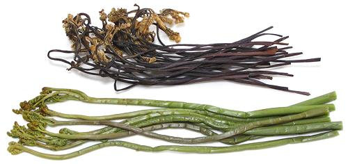
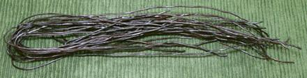

Bracken Fern

[Brake Fern, Fernbrake; Gosari (Korea); Warabi (Japan);
Pteridium aquilinum]
A common fern in temperate climates, immature Bracken fronds are
eaten as a vegetable in many parts of the world and particularly in Korea,
Japan and parts of China. Native Americans dug up, cooked and ate the
rhizomes from which the fronds sprout. These are still used in Japan,
Sichuan, China and elsewhere, as a starch source (see noodles, below).
Bracken Fern is toxic to livestock when a significant part of their
diet. For humans, fresh fern should be cooked (simmered 10 minutes) and
eaten in moderation. One of the toxins is a thiamine inhibitor that can
cause a vitamin deficiency if consumed for an extended period.
Bracken also contains a substance identified as a carcinogen
(ptalquiloside), and has been placed in the same risk category as
Coffee and Sassafras by the American Cancer Society. Study is ongoing,
and there appears to be some cancer correlation for Korean and Japanese
populations who eat fernbrake on practically a daily basis.
Ptalquiloside is volatile and destroyed by heat. Currently there is
insufficient data as to how much may remain in fresh boiled fernbrake,
or dried, boiled, soaked and cooked fernbrake. Basically, cooked
fernbrake seems safe enough for occasional use. Some varieties of
fernbrake, particularly in New Zealand, do not contain this substance.
More on Culinary Ferns.
The photo specimens are water packed and dried examples from a local
Korean market. The dried is most used in Korea, because young fernbreak
fronds are seasonal.
Water Packed
These were up to 11-1/2 inches long and the
largest stems were just under 0.25 inch diameter. I have found it best to
trim fronds to 9 inches because beyond that they are likely to be hard
and fibrous.
Dry Fernbrake:
These were purchased from a Korean market
in Los Angeles in a 6 ounce plastic bag, at 2015 US $3.99 for 6 ounces
($10.64 / pound). They take boiling and a long soak (see below), but
provide an interesting flavor.
Yield:
Dried fernbrake, boiled and soaked by the method
given below: one ounce dried produces 6.1 ounces rehydrated. The
fernbrake is reasonably tender after the boil and cool, but the yield is
5.4 ounces per ounce, so it clearly can still benefit from the 8 hour
soak.
Korean cooking maven Maangchi recommends this procedure:
- Put the Dried Ferns in a pot with plenty of water to cover
and bring to a boil for 30 minutes.
- Set the pot aside, covered, and let cool for about for 2 or 3 hours.
- Drain Ferns, place in a bowl and cover with cold water. Let
soak 8 hours or overnight, changing the water 2 or 3 times.
- If the fernbrake is still not soft, boil for another 30 minutes and
let it sit until soft.
Fern Root Noodles

We found these noodles, made from starch extracted from bracken fern
root, in one of the large Asian markets here in Los Angeles. The strands
were 0.063 inch diameter and 20 inches long, folded in the middle. Cooked,
they resemble large, dark colored bean starch noodles, but have a lightly
earthy flavor, while bean starch noodles are pretty neutral. These come
from Sichuan China, ingredients: fern root starch, rapeseed oil.
fn_fernbrz 150916 - www.clovegarden.com
©Andrew Grygus - agryg@clovegaden.com - Photos on
this page not otherwise credited are ©
cg1 - Linking to and non-commercial
use of this page permitted